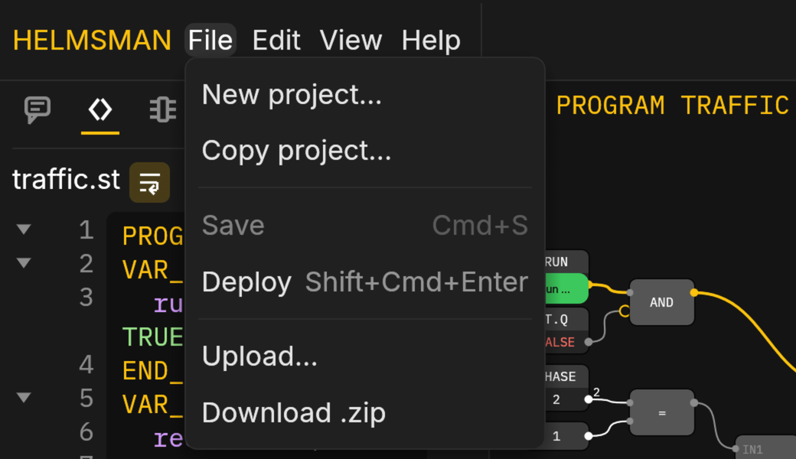
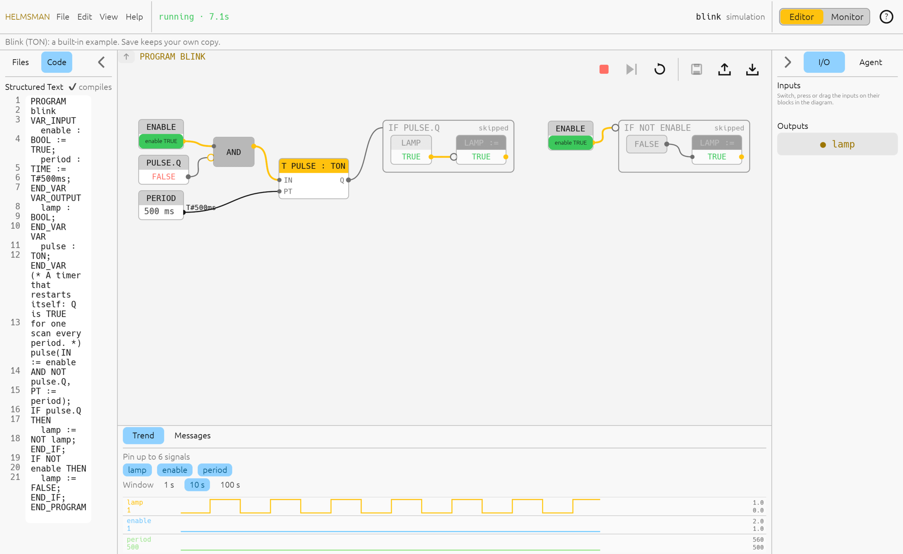
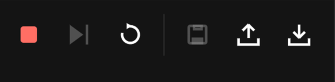
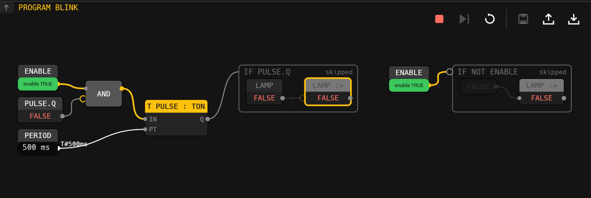
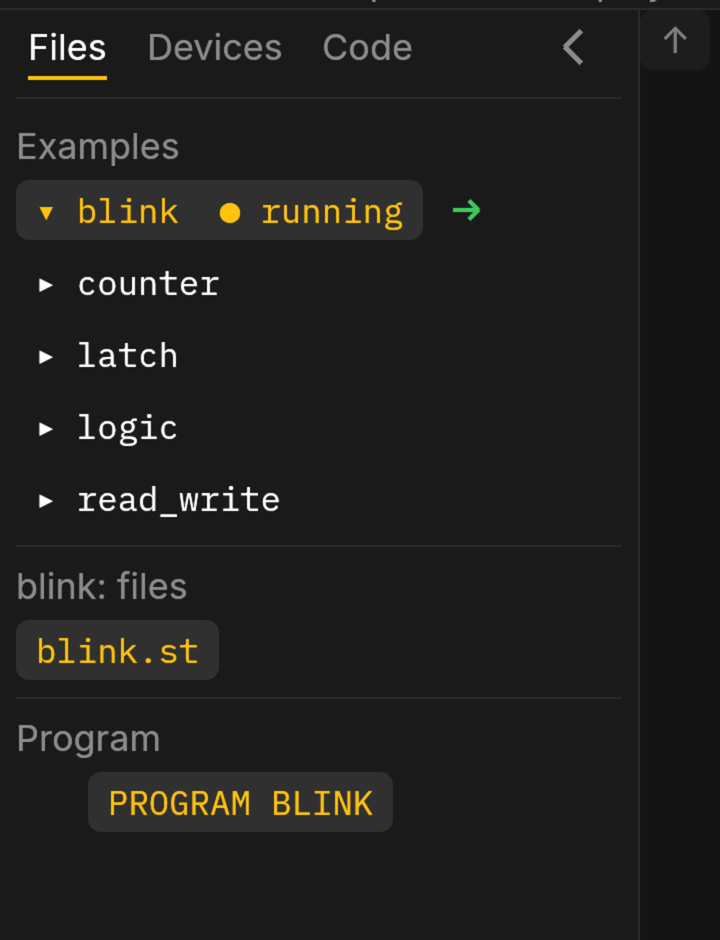
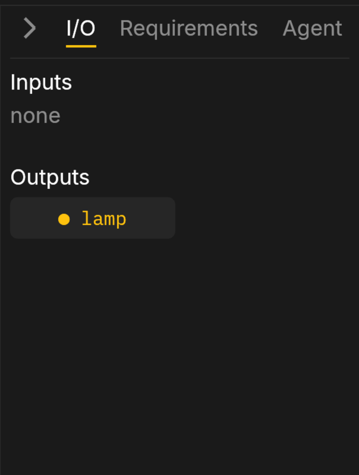

The Editor
The Editor is the screen you program in. It is the same on a box and in the simulation; what differs is where the program runs.
The header
One row along the top.
- HELMSMAN, on the left, opens this site.
- File · Edit · View · Help: the menus. Every item that has a key shows it. File holds Save, Deploy, Upload and Download. Edit holds Undo and Redo for the Structured Text, Go to definition and Cross references. View switches between the Editor and the Monitor, shows or hides each pane, and has Light mode (dark is the default; the browser remembers your choice). Help opens these pages, the keyboard table, and About Helmsman (the version and build).
- The state:
running,stoppedorfaulted, green when running, red otherwise, with the program's clock. On a box this is the link to the box instead. - On the right: the project's name, a mark when it has unsaved edits, the Editor | Monitor toggle, a yellow waiting badge when proposals wait for an approver (it opens the Proposals screen) and, on a box, Sign in.

If something needs saying, a line appears under the header while it is true: a fault, a deploy under way or refused, a file someone else saved since you opened it (with a Reload). The Messages tab along the bottom keeps those lines after they have gone.

The glyphs
A strip of buttons sits over the diagram's top-right corner. In the
simulation: run or stop (Ctrl Enter), step one
scan (F10, when stopped), and restart from initial values. On
both: save, upload a file into the project, download the project as a
.zip, and ? for these pages. Hover one for
its name and key.

The diagram
The diagram is the program, drawn from its Structured Text and lit from the controller as it runs. It is not a second way to write the program: you cannot draw into it. What you can do:
- Read it. Each block is a variable, a block instance, an operator or a function; wires carry values left to right and show them (a BOOL wire is bright when TRUE). An IF, CASE or loop is a box around what it guards, marked taken or skipped. A block that ran this scan stays lit for a moment, so a one-shot reads as a blink.
- Ask why. Click an output or any assignment: everything that drives its value stays lit and the rest dims. Click empty space to clear.
- Go to the code. Click any block and the Structured Text pane scrolls to its line. Edit › Go to definition (Ctrl Shift D) jumps to where the picked block's variable is declared; Cross references (Ctrl Shift X) lights every read and write of it.
- Switch an input. An input's block is a control: a switch flips on a click, a push button is on while you hold it, a number takes what you type and keeps it when you press Enter (Esc puts the old value back). In the simulation these are the virtual inputs; on a box they are forces (see On a box).
- Go into a block. Double-click a function block instance to see its own diagram; Alt ↑ or the breadcrumbs come back up.
- Arrange. Drag a block, or an IF by its label, to move it. View › Reset layout goes back; View › Save layout as default keeps your arrangement with the project so everyone opens it that way. Pan with a drag on empty space, zoom with the wheel; the diagram never leaves the view, and a double-click on empty space fits it again.

Values that would clutter the diagram are left off it: a constant
shows its name alone, a time reads as T#500ms. A wire that
would cross the whole diagram is drawn as a pair of tagged stubs naming
the signal instead of a long lead. Fitting the diagram to the view never
shrinks it past the point where its labels read: a big program shows its
left part and you pan.
Icons. A block can carry one character at the left
of its header, so you can tell a timer from a counter at a glance: the
standard blocks have built-in ones (T for timers, # for counters, ↑ and
↓ for the edge detectors, S and R for the bistables, ~ for the blink
pattern), and a file named icons.map in the project adds
your own, one rule a line:
MOTOR = M # every block of type MOTOR
conveyor* = > # every variable or instance whose name starts so
TON = ⏱ # over the built-in oneThe project's rules win over the built-in ones. Zoomed out past where the label is drawn, the icon stands alone at a readable size.
The panes
- The left pane has three tabs. Files (Alt 0): the project's files, the examples and starters, and the program tree under them; a right-click on a file offers Copy, Paste, Duplicate, Rename and Delete, and what you copy pastes into any project you open next. Devices (Alt 4): the devices the project's I/O map names, each with its points under it, their live values, and whether the link is up; a right-click on the blank space adds a device (name, protocol, address, settings) as a line of the map; Import device… takes the vendor's EDS file, keeps it in the project and fills the form in from it. Under the map's devices, On the network: Scan lists every EtherNet/IP device that answers on the LAN, says whether the map already has it, and shows what the public device library knows of it; right-click one that is not in the map and Add to the map… opens the form filled in, the device named by its identity so a changed address never loses it. One map may mix Modbus TCP and EtherNet/IP devices. The agent reads the same listing, network included. Code (Alt 1): the Structured Text editor. Errors are marked on the line as you type; the program running does not change until you deploy. The key for a tab opens the pane on it, or shuts the pane when that tab already shows.
- The bottom panel (Alt 2): the Trend of the signals you pin, with a long time axis, and Messages, the last two hundred things the page had to say, with the error count on the tab.
- The side panel, on the right (Alt 3): I/O, every input and output with its value and a control for each input the diagram does not show; and Agent, where you describe what you want.


Each pane remembers whether it was open, per browser.